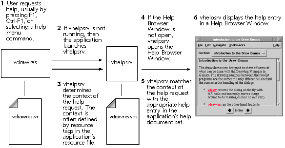

The Galaxy Help Server
Providing Help for Galaxy Applications
The Galaxy Help Server (vhelpsrv) is the engine that provides help for Galaxy applications. vhelpsrv must be running before it can service a help request. If the help server is not running at the time of a help request, then the Galaxy application automatically starts the help server. The help server continues to run until a time-out period elapses. In order for a user to invoke help, vhelpsrv must be in the path for the user. Note that one instance of the help server can service help requests for any number of Galaxy applications that are concurrently running.
- NOTE: vhelpsrv does not supply native help to your application. However, the
Galaxy API does provide a way to access native help on platforms where
native help is available. For more information on providing native help to
your applications, refer to the Reference Manual. In C++, refer to
vhelpWindow::UseNativeHelpSystem and related entry points; in C
refer to vhelpUseNativeHelpSystem and related entry points.
Figure 21. How the Galaxy Help Server works

The optional -noserver argument does not register the help server. Consequently, this instance of the help server is not available to other Galaxy applications. The -noserver argument also means the help server shuts down immediately when you close your last Help Browser Window.
A designated help key is only available on those platforms that define a Help key on the keyboard.
A help object is an object that has been programmatically designated to generate help queries. For more on help objects, refer to the Reference Manual. In C++, refer to vobjectedAttributed::Help; in C, refer to vobjectHelp.
Help menu items are menu items that have been designated as help objects.
Subsequent help requests are similarly processed. If the help server is running because of a previous help request in this or another application, you can expect a relatively quick response time. However, if the help server has timed out, it must start a new session before it can service the request.
Previewing Documents with the Galaxy Help Server
You can use the help server to preview a help document set. To do this, run the help server from the command line using the name of the document set as a command line argument. The syntax for previewing help documents on a UNIX platform is given here. Other platforms may use different conventions to specify arguments to the help server.vhelpsrv myapp1.vhs [myapp2.vhs...] [-noserver]
This opens each specified help document set (myappN.vhs) in a Help Browser Window. Invoking Online Help from an Application
To invoke online help from a Galaxy application, do any of the following:
Ctrl-F1 is a toggle between live mode and query mode. All of the other methods invoke help in query mode. Servicing Help Requests
When the help server processes the first help request from an application, it looks for a help document set with the same base name as the application that requested help. For example, if you request help in the Galaxy application "myapp," then the help server looks for a document set named "myapp.vhs." If the help server finds this document set, then a session with the help server is started. The help server then looks for the context of the help request (help contexts are explained in the following section, "Context-sensitive Help"). Once a context is found, a Help Browser Window opens displaying the help entry from the help document set corresponding to the context. Note that a help entry is a subject or section from a help document set.NOTE: When searching for an application's help document set, the help server
searches the same paths that Galaxy applications use to search for a resource
file. For more information, refer to the vinst module in the Reference Manual.
Context-sensitive Help
Galaxy Help Services provide context-sensitive help to Galaxy applications with a scheme that uses context strings. When a user requests help on an item in a Galaxy application, the help server generates a context string for the item. If the generated context string matches a context string defined in the help source file, the entry for that context is displayed by the help server.
When generating the context string, the help server determines which item is making the request. Normally, the help server generates a context string for the item with the current focus. However, if the help server is in live help mode, then the help server generates the context string for the item located beneath the pointer.
Context Strings
To generate a context string for an item, the help server concatenates the resource tag name for the item with the resource tag name of all containers or dialogs in which the item is located. For example, suppose a dialog contains a button which is placed inside a container and the resource tag names for the items are, respectively, "MainDialog," "MyButton," and "MyContainer." Table 8 lists the context strings for these items.
| Item | Context String |
|---|---|
| button | MainDialogMyContainerMyButton |
| container | MainDialogMyContainer |
| dialog | MainDialog |
When a request is made for help on an item, the help server first searches the help document for a help entry (a subject or section in the help document) with a context that matches the context string generated for the item. If a help entry is not found, then a new search is made with the context string of the item's parent. The search continues until a help entry is found, or the context string is exhausted. When a help entry is found, the help server displays the entry in a Help Browser Window.
Leader Windows
If the dialog is a follower from another dialog or window-based resource, the tag name for the leader dialog is included as the first "element" in the context string.
In some circumstances, you may not be able to include the tag for the leader window of a dialog in the context string. For example, consider a confirmation dialog that you reuse in several applications. This confirmation dialog can be called from various leader windows, depending on the application. If you want to create a help document for this confirmation dialog that you can later reuse in various applications, then you need to determine all possible context strings that can be generated for the confirmation dialog. This means knowing in advance the tag name of any leader window that calls the confirmation dialog.
Since it may not be possible to know the tag names of all leader windows to this confirmation dialog, you need to prevent the help server from including this tag name in the generated context string. To do this, subclass the confirmation dialog and override the member function (C++) or method (C) that gets the help parent. In C++, override vobjectAttributed::GetHelpParentObject so it returns NULL; in C, override vobjectGET_HELP_PARENT so it returns NULL.
Specifying Contexts
In help source files, use the following help syntax commands to specify contexts for context-sensitive help:
- @subject
- @section
- @context
- @link
- @popup
- @external
Determining Context Strings
When specifying context strings for help syntax commands, you need to determine the resource tag names of objects in an application. You can do any of the following to determine the resource tag names:
- Examine the application's resource file with the Visual Resource Builder
- Use the Dump Resource File Tags... option of the Galaxy Help Compiler
- Use Galaxy debugging information to determine the context string generated by the help server
Visual Resource Builder
If the application has a resource file, you can use the Visual Resource Builder to determine the tag names.To determine resource tag names with the Visual Resource Builder, open the editor for the resource. The tag name for any window resource, or any item subclassed from a window, is displayed in the Tag text field. Dialogs, confirms, notices, and containers are all subclassed from windows.
The tag names for dialog items are displayed in the Order Items Panel of the dialog containing the dialog items. The tag name can also be found in the Tag text field of the Dialog Item Panel.
For more information on the Visual Resource Builder, refer to the Visual Resource Builder Online Help.
Galaxy Help Compiler
To print the tag names of an application's resource file using the Galaxy Help Compiler, select Dump Resource File Tags... from the compiler's File Menu.
Generating Debug Information
You can take advantage of Galaxy debugging information to find the help context strings generated by a help request in your application. To do this, you need to compile your application with the debugging libraries and run the application with the proper debug level in your environment. The help server then prints information on the context strings it generates while servicing help requests.
For example, compile a debugging version of the vdrawres sample located in the samples directory of your Galaxy installation directory. (The following example uses UNIX conventions for compiling and setting environment variables. Be sure to use the conventions appropriate for your platform.)
- % make vdrawres VBUILDTYPE=debug
- % setenv vdebugVARIABLES vhelp:1000:vhelpGalaxy:1000
- vhelpGalaxy: sent nested context change to window (0x3cc488):
vhelpGalaxy: DrawDemoStartBtn
vhelpGalaxy: pieces are:
vhelpGalaxy: DrawDemo:StartBtn
Since the help document set, vdrawres.vhs, does have a matching entry for the context "DrawDemoStartBtn," the help server displays this entry. If there were not a matching entry for this context, then the help server would have displayed the help entry for "DrawDemo."
Table of Contents
Switch to Another Document
Need help? Contact Visix.